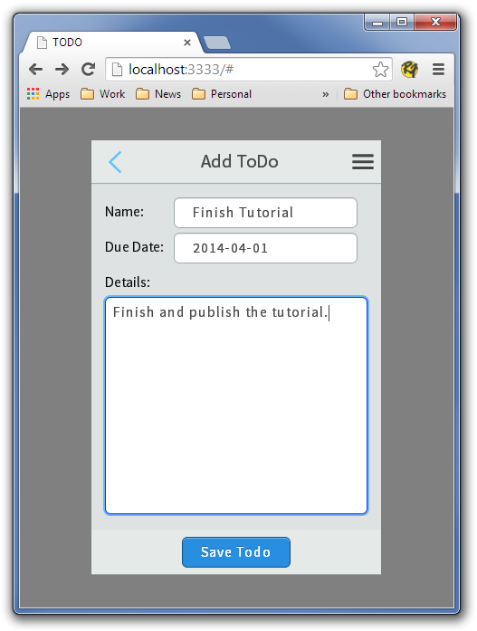
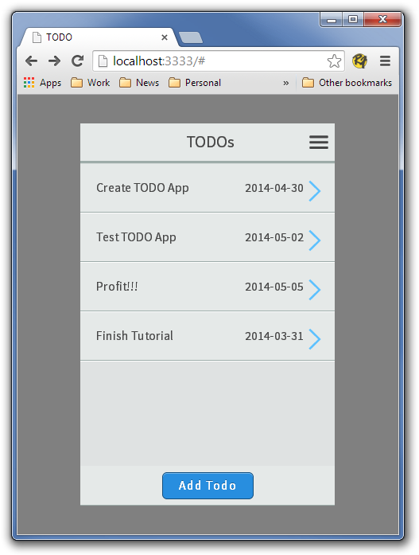
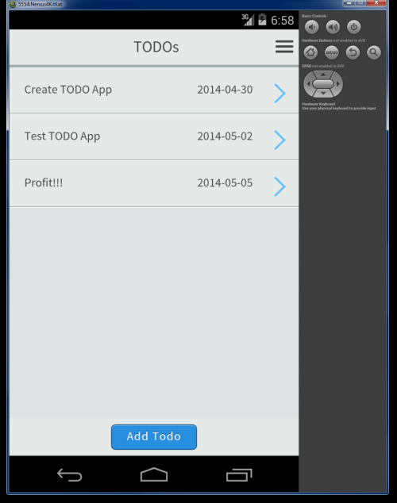

<div class="row">
    <div class="col-sm-12">
        <h1>TODO Single Page - Part 2</h1>

        <h3>What is to be achieved</h3>

        <div class="tutorialItem">
            We are continuing on from <a href="tutorial_single_1.html">Tutorial 1</a>, in this tutorial we will stop
            using our demo data and add a proper ToDo "service" that will handle loading and storing of our data.  Next
            we will add a page to show the ToDo in all it's glory.  We will then add a way to Add and Edit our ToDo's.
            At that point we will have a minimum viable product so it will be time to get our product up and running
            in Phonegap.
        </div>

        <h3>A ToDo service</h3>

        <div class="tutorialItem">
            This really has nothing to do with TopCoatTouch, but we need a way to manage the data that holds our ToDo's
            so we will quickly create a ToDo service.  TopcoatTouch is completely agnostic about the way you organize
            your application, store your data, and update your UI.  You can use Backbone for your objects, or not -- in
            this demo we have created very simple class based on the functional pattern, with a Singleton to manage
            all of the ToDo data.  We don't argue that our simple ToDo service is the best example of OOP Javascript,
            just a very simple class that everyone can understand.  We aren't doing any data binding in our example
            application, but you can use Knockout or whatever data binding you want.  All of our modules are simply included
            in the index.html file, however you can use a <a href="http://www.commonjs.org/">CommonJS</a> or
            <a href="https://github.com/amdjs/amdjs-api/wiki/AMD">AMD</a> module loader.  If you do use <a href="http://requirejs.org/">require.js</a> or
            <a href="http://browserify.org/">browserify</a> or <a href="https://github.com/component/component/">Component</a>
            or some other module loading system, it will require some changes to the Gruntfile if you want minimized Javascript and CSS (though you can
            easily build a debug version of the App without any modification).  As you can see in building TopcoatTouch we
            have decided not to be proscriptive, though we tend to favour micro-libraries and as little ceremony as possible.
        </div>

        <div class="tutorialItem">
            So our very simple ToDo service has to be able to load ToDo's (we are simply going to store them in LocalStorage),
            save ToDo's, add ToDo's, remove ToDos, get a single ToDo and get all the ToDos.  So, let's create a new file called
            todo-service in the js directory.  Also add a link to the javascript file in the index.html before inclusion of app.js.
            If you want to see the completed class, you can look at in on <a href="https://github.com/kriserickson/topcoat-touch-todo/blob/stage-2/app/js/todo-service.js">GitHub</a>
            however we are going to quickly build it up here:</div>

            <code class="language-javascript">// This todoService is a singleton, so we new an Anonymous function.
window.toDoService = new (function ToDoService() {
    var id = 1;
    var toDos = {};
    var self = this;

    // The ToDo class is only avaialble in the toDoService
    function ToDo(name, details, dateDue, complete) {
        this.id = id++;
        this.name = name;
        this.details = details;
        this.dateDue = new Date(dateDue);
        this.dateDueString = function() {
            // Create a YYYY-mm-dd style date, in production use Moment.js
            return this.dateDue.getFullYear() + '-' + (Array(2).join(0) +  this.dateDue.getMonth()).slice(-2) + '-' +
                (Array(2).join(0) +  this.dateDue.getDate()).slice(-2);
        };
        this.complete = !!complete; // Enforce a boolean
    }
}}();</code>


        <div class="tutorialItem">
            Since we are creating a singleton for the service we are building it off of the global window.  I agree that
            using some kind of module system is a far better approach, but to keep things simple we are cutting a few
            corners here and there.  Next we declare the private vars for the service:

            <ul>
                <li><code class="noblock">id</code> is used to keep a unique id
                    for each of our toDo's (this will not be stored when we save our ToDo's so on different loads a ToDo's id
                    may not be the same, not that it matters for this demo but if you ever extend this demo you should be aware
                    that the id for a ToDo is only valid for each session).</li>
                <li><code class="noblock">toDos</code> is a collection of our toDos</li>
                <li><code class="noblock">self</code> is a way to ensure we are using the correct this, not really necessary
                    in this case, and I know some people find the use of self as an anti-pattern, but it is here nonetheless. </li>
            </ul>

            After the private vars we declare a very simple class, which if we didn't want a constructor could really be an
            object.  It has one function which gives us a more human readable date.  Please feel free to add something like
            <a href="http://momentjs.com/">moment.js</a> to improve the date formating, but as I have stated before we are
            trying to keep things very simple here.

        </div>

        <div class="tutorialItem">
            Next we add a way to add, remove, and get our toDos. Nothing has to be said about any of this:
        </div>

        <code class="language-javascript">this.addToDo = function(name, details, dateDue, complete) {
    var todo = new ToDo(name, details, dateDue, complete);
    toDos[todo.id] = todo;
    return todo;
};

this.removeToDo = function(toDo) {
    delete toDos[toDo.id];
};

this.getAllToDos = function() {
    return toDos;
};

this.getToDo = function(id) {
    return toDos[id];
};</code>

        <div class="tutorialItem">
            The last bit of the service saves and stores our ToDo's:
        </div>

        <code class="language-javascript">this.save = function() {
    window.localStorage['todos'] = JSON.stringify(toDos);
};
    // If we already have todos, load them
    if (window.localStorage.getItem('todos')) {
        var toDoPojos = JSON.parse(window.localStorage.getItem('todos'));
        $.each(toDoPojos, function(index, val) {
            self.addToDo(val.name, val.details, val.dateDue, val.complete);
        });
    } else {
        // Load some bogus todos to start, delete this before production...
        this.addToDo('Create TODO App', 'Step 1 is to create the ToDo app', new Date(2014,3,30));
        this.addToDo('Test TODO App', 'Step 2 is some quick testing', new Date(2014,4,2));
        this.addToDo('Profit!!!', 'Step 3 is sell our ToDo app for millions on the app store', new Date(2014,4,5));
        this.save();
    }

})();</code>

        <div class="tutorialItem">
            We store our ToDo's in localStorage.  They are not ever going to be big enough
            to warrant any kind of database, however if we did need better abilities to query we could always switch
            to <a href="http://brian.io/lawnchair/">Lawnchair</a> or <a href="http://pouchdb.com/">PouchDB</a>.
            LocalStorage only allows strings to be stored, so to save our ToDo's we convert them to JSON and store
            them in localStorage under <code class="noblock">todos</code>.  To "re-hydrate" our ToDos we convert
            the JSON string back to a collection of objects and then recreate the ToDo's by adding them one at a time.
            It's a very simple persistence strategy but it will work for what we need.  In the beginning (since we
            still can't add ToDo's we will populate with some default data, which will be removed later.

        </div>

        <h3>Viewing a Todo</h3>

        <div class="tutorialItem">
            We have cleaned up our app.js a little (once again step-2 is visible on <a href="https://github.com/kriserickson/topcoat-touch-todo/blob/stage-2/app/js/app.js">Github</a>):
            <ul>
                <li>Replacing the previous ToDo service with the one created above.</li>
                <li>Slightly changing our list to add a data-id to identify our ToDo rows.</li>
                <li>Adding an onclick event handler to update the view ToDo page whenever the user clicks on a ToDo</li>
            </ul>

            Let's quickly look at, starting underneath the instantiation of the TopcoatTouch object:
        </div>

        <code class="language-javascript">var toDos = toDoService.getAllToDos();

var todoList = '';

$.each(toDos, function(key, toDo) {
    todoList += '&lt;li class="topcoat-list__item" data-rel="todoView" data-id="' + toDo.id + '"&gt;' +
        '&lt;span class="toDoName two-thirds"&gt;' + toDo.name + '&lt;/span&gt;' +
        '&lt;span class="toDoDate"&gt;' + toDo.dateDueString() + '&lt;/span&gt;' +
        '&lt;span class="chevron"&gt;&lt;/span&gt;&lt;/li&gt;';
});

$('#todoList').html(todoList);</code>

        <div class="tutorialItem">
            The only real change (other than grabbing the toDos from our service, is that we have added the data-id to the toDo.id.  This
            will allow us to react to the clicking of a li and change the ToDo showing on the todoView page.  Next we will handle said click:
        </div>

        <code class="language-javascript">$('#todoList').on('click', 'li[data-id]', function() {
    var toDo = toDoService.getToDo($(this).data('id'));
    $('#todoView .header, #nameField').text(toDo.name);
    $('#dueDateField').text(toDo.dateDue.toLocaleString());
    $('#detailsField').text(toDo.details);
});</code>

        <div class="tutorialItem">
            This uses jQuery to handle the onclick event of any list items with a data-id.  We get the toDo from our toDoService, and the populate
            the various fields with the toDo data.  What our click handler does not do is move to the todoView, this is because this is automatically
            handled by the data-rel tag in the list item.  You certainly could take out the data-rel tag and add <code class="noblock">tt.goTo('todoView');</code>
            inside the click handler.  In the future we will switch from using jQuery delegation to Topcoat event handling, but we have started with
            jQuery event handling so it is very clear what is going on.
        </div>
        
        <div class="tutorialItem">
            Finally we have to add our template for our todoView page.  Nothing should need explanation here:
            
        </div>
        
        <code class="language-markup">&lt;div id="todoView" data-role="page"&gt;
    &lt;div class="topcoat-navigation-bar"&gt;
        &lt;div class="topcoat-navigation-bar__item left quarter"&gt;
            &lt;a class="topcoat-icon-button--quiet back-button" href="#"&gt;
                &lt;span class="topcoat-icon topcoat-icon--back"&gt;&lt;/span&gt;
            &lt;/a&gt;
        &lt;/div&gt;
        &lt;div class="topcoat-navigation-bar__item center half"&gt;
            &lt;h1 class="topcoat-navigation-bar__title header"&gt;&lt;/h1&gt;
        &lt;/div&gt;
        &lt;div class="topcoat-navigation-bar__item right quarter"&gt;
            &lt;a class="topcoat-icon-button--quiet menu-button" href="#"&gt;
                &lt;span class="topcoat-icon topcoat-icon--menu-stack"&gt;&lt;/span&gt;
            &lt;/a&gt;
        &lt;/div&gt;
    &lt;/div&gt;
    &lt;div class="content"&gt;
        &lt;div class="item"&gt;
            &lt;div class="quarter left" id="nameLabel"&gt;Name:&lt;/div&gt;
            &lt;div class="three-quarters right" id="nameField"&gt;&lt;/div&gt;
        &lt;/div&gt;
        &lt;div class="item"&gt;
            &lt;div class="quarter left" id="dueDateLabel"&gt;Due Date:&lt;/div&gt;
            &lt;div class="three-quarters right" id="dueDateField"&gt;&lt;/div&gt;
        &lt;/div&gt;
        &lt;div class="item"&gt;
            &lt;div class="full" id="detailsLabel"&gt;Details:&lt;/div&gt;
            &lt;div class="full" id="detailsField"&gt;&lt;/div&gt;
        &lt;/div&gt;
    &lt;/div&gt;
&lt;/div&gt;</code>

        
        <div class="tutorialItem">
            Now that we have our service in place and can actually view our todo's lets look at what we have.  In a terminal (command prompt)
            go to the topcoat-touch-todo directory and type <code class="noblock">grunt</code> again, and you will see:

            <code class="language-yeoman"><span class="yeoman-green">topcoat-touch-todo$</span> <span class="yeoman-yellow">grunt</span>
<span class="yeoman-grey">Running "http-server:dev" (http-server) task
Server running on  127.0.0.1:3000
Hit CTRL-C to stop the server</span></code>

            Go to http://localhost:3000 in your browser and you will see the same initial page we saw in the previous tutorial,
            except that now we can click on our ToDo's and see the following:

            <div class="imageHolder">
                
            </div>

            Not exactly the most beautiful screen, but we do now have a multipage application.  You can use the back arrow (or the
            back button) to go back to our list of ToDo's.  We will fix up the CSS later to improve the look of our View page,
            but for now let's move on to adding a new ToDo.
        </div>

        <h3>Adding a ToDo</h3>

        <div class="tutorialItem">
            Step one in creating a ToDo add page is to create the page in the index.html.  Add it after our todoView page:
            
            <code class="language-markup">&lt;div id="todoEdit" data-role="page"&gt;
    &lt;div class="topcoat-navigation-bar"&gt;
        &lt;div class="topcoat-navigation-bar__item left quarter"&gt;
            &lt;a class="topcoat-icon-button--quiet back-button" href="#"&gt;
                &lt;span class="topcoat-icon topcoat-icon--back"&gt;&lt;/span&gt;
            &lt;/a&gt;
        &lt;/div&gt;
        &lt;div class="topcoat-navigation-bar__item center half"&gt;
            &lt;h1 class="topcoat-navigation-bar__title header"&gt;&lt;/h1&gt;
        &lt;/div&gt;
        &lt;div class="topcoat-navigation-bar__item right quarter"&gt;
            &lt;a class="topcoat-icon-button--quiet menu-button" href="#"&gt;
                &lt;span class="topcoat-icon topcoat-icon--menu-stack"&gt;&lt;/span&gt;
            &lt;/a&gt;
        &lt;/div&gt;
    &lt;/div&gt;
    &lt;div class="content"&gt;
        &lt;div class="item"&gt;
            &lt;div class="quarter left"&gt;Name:&lt;/div&gt;
            &lt;input class="three-quarters topcoat-text-input" placeholder="ToDo Name" id="nameInput"/&gt;
        &lt;/div&gt;
        &lt;div class="item"&gt;
            &lt;div class="quarter left"&gt;Due Date:&lt;/div&gt;
            &lt;input type="datetime" class="three-quarters topcoat-text-input" placeholder="Due Date" id="dueDateInput"/&gt;
        &lt;/div&gt;
        &lt;div class="item"&gt;
            &lt;div class="full"&gt;Details:&lt;/div&gt;
            &lt;textarea class="full topcoat-textarea" id="detailsTextarea"&gt;&lt;/textarea&gt;
        &lt;/div&gt;
    &lt;/div&gt;
    &lt;div class="topcoat-bottom-bar"&gt;
        &lt;div class="topcoat-bottom-bar-item full center"&gt;
            &lt;button class="topcoat-button--cta" id="saveButton"&gt;Save Todo&lt;/button&gt;
        &lt;/div&gt;
    &lt;/div&gt;
&lt;/div&gt;</code>

        Once again we have created a fairly simple form.  We have called it todoEdit, since we are going to reuse it for editing
        ToDo's in a later tutorial.  Now let's bring up our form, go back to app.js and the following underneath our todoList click
        handler:

        <code class="language-javascript">var $todoEdit = $('#todoEdit');

$('#addButton').click(function() {
    $todoEdit.find('.header').text('Add ToDo');
    $todoEdit.find('input, textarea').val('');  // Clear out the input and text..
    tt.goTo($todoEdit);
});</code>

        Hopefully our http-server is still running, if not fire it up again through grunt.  Let's look at what we have, load the page
        and click on 'Add ToDo'.

        <div class="imageHolder">
            
        </div>

        Well, that works, but it is pretty ugly.  Let's clear up our CSS a little so we don't think we are in some Brobdingnagian land
        of giant controls every time we look at our app.  Open <code class="noblock">css/app.css</code> and paste in the following:

        <code class="language-css">#todoView .content, #todoEdit .content {
    margin: 15px;
}

.item {
    margin: 5px 0;
}

.item * {
    line-height: 2em;
}

.topcoat-button--cta {
    line-height: 2em;
    margin: .5em 0;
}

.topcoat-textarea {
    line-height: 1em;
    font-size: 1em;
    padding: .5em;
    height: 15em;
}</code>

        Reload, click "Add ToDo" again and:

        <div class="imageHolder">
            
        </div>

        Much better.  Now let's make the "Save ToDo" button work.  We are going to have to change our app.js a little.  Replace the
        code that creates the todoList with a function (if you are using a nice IDE like <a target="_blank" href="http://jetbrains.com/webstorm">WebStorm</a> you
        can extract method, otherwise you will have to do it by hand.  In the end it should look like:

       <code class="language-javascript">function createToDoList() {
    var toDos = toDoService.getAllToDos();
    var todoList = '';
    $.each(toDos, function (key, toDo) {
        todoList += '&lt;li class="topcoat-list__item" data-rel="todoView" data-id="' + toDo.id + '"&gt;' +
            '&lt;span class="toDoName two-thirds"&gt;' + toDo.name + '&lt;/span&gt;' +
            '&lt;span class="toDoDate"&gt;' + toDo.dateDueString() + '&lt;/span&gt;' +
            '&lt;span class="chevron"&gt;&lt;/span&gt;&lt;/li&gt;';
    });
    $('#todoList').html(todoList);
}

createToDoList();</code>

        Now after the addButton click hanlder we wrote, add the following saveButton click handler:

        <code class="language-javascript">$('#saveButton').click(function() {
    toDoService.addToDo($('#nameInput').val(), $('#detailsTextarea').val(), $('#dueDateInput').val());
    toDoService.save();
    createToDoList();
    tt.goTo('#home');
});
</code>

            There isn't much to say about this.  We add our ToDo to the toDo service, and save the values. In the toDo service
            we have separated adding and saving of data for several reasons, the main being that we use the add function
            when we rehydrate out ToDo's from localStorage, it also makes the service a little more testable.  Let's reload our
            browser and test the app again.  Click "Add Service" from the first page, and add some data, then click "Save ToDo",
            you should see the initial page with our new ToDo:

        <div class="imageHolder">
            
        </div>

            <strong>Awesome</strong>!  Once again if you having any problems, you can see the entire project on
            <a href="https://github.com/kriserickson/topcoat-touch-todo/tree/stage-3">Github (tag stage-3)</a>.
            Now let's get this sucker running in an emulator.

        </div>

        <h3>Phonegap Time!</h3>

        <div class="tutorialItem">
            Finally, let's get this app running in Phonegap.  There are grunt-tasks built into the grunt runner but
            we are going to manually perform the cordova tasks, a) for clarity, b) the grunt-cordova plugin is not
            always 100% reliable.
        </div>

        <div class="tutorialItem">

        First, let's create the phonegap project.

            <code class="language-yeoman"><span class="yeoman-green">topcoat-touch-todo$</span> <span class="yeoman-yellow">cordova create cordova topcoat-touch-todo.example.com TopcoatTouchTodo</span>
<span class="yeoman-grey">Creating a new cordova project with name "TopcoatTouchTodo" and id "topcoat-touch-todo.example.com" at location "~topcoat-touch-todo\cordova"
Downloading cordova library for www...
Download complete</span></code>

            The next thing we have to do is to create our distribution code, this will be created under cordova/www.  For
            now we will be working with the debug code so type:

            <code class="language-yeoman"><span class="yeoman-green">topcoat-touch-todo$</span> <span class="yeoman-yellow">grunt debug-cordova</span>
<span class="yeoman-grey">Running "clean:dist" (clean) task
Cleaning dist/index.html...OK
Cleaning dist/todo.combined.js...OK
Cleaning dist/todo.css...OK
Cleaning dist/todo.min.css...OK
Cleaning dist/todo.min.js...OK

Running "clean:cordova" (clean) task
Cleaning cordova/www/index.html...OK
Cleaning cordova/www/img...OK
Cleaning cordova/www/css...OK
Cleaning cordova/www/font...OK
Cleaning cordova/www/js...OK

Running "copy:debugCordova" (copy) task
Created 4 directories, copied 24 files

Done, without errors.</span></code>

            First we need to add Android as target platform:

<code class="language-yeoman"><span class="yeoman-green">topcoat-touch-todo$</span> <span class="yeoman-yellow">cd cordova</span>
<span class="yeoman-grey">cordova$ cordova platform add android
Creating android project...
Creating Cordova project for the Android platform:
        Path: platforms\android
        Package: topcoat_touch_todo.example.com
        Name: TopcoatTouchTodo
        Android target: android-19
Copying template files...
Running: android update project --subprojects --path "platforms\android" --target android-19 --library "CordovaLib"
Resolved location of library project to: ~\topcoat-touch-todo\cordova\platforms\android\CordovaLib
Updated and renamed default.properties to project.properties
Updated local.properties
No project name specified, using Activity name 'TopcoatTouchTodo'.
If you wish to change it, edit the first line of build.xml.
Added file ~\topcoat-touch-todo\cordova\platforms\android\build.xml
Added file ~\topcoat-touch-todo\cordova\platforms\android\proguard-project.txt
Updated project.properties
Updated local.properties
No project name specified, using project folder name 'CordovaLib'.
If you wish to change it, edit the first line of build.xml.
Added file ~\topcoat-touch-todo\cordova\platforms\android\CordovaLib\build.xml
Added file ~\topcoat-touch-todo\cordova\platforms\android\CordovaLib\proguard-project.txt

Project successfully created.</span></code>

            Now let's compile project:

<code class="language-yeoman"><span class="yeoman-green">cordova$</span> <span class="yeoman-yellow">cordova build</span>
<span class="yeoman-grey">Running command: cmd args=["/c","~/topcoat-touch-todo/cordova/platforms/android/cordova/build"]

Buildfile: ~/topcoat-touch-todo/cordova/platforms/android/build.xml
</span>
...SNIP...
<span class="yeoman-grey">BUILD SUCCESSFUL
Total time: 19 seconds</span>
            </code>

            Now let's run our app in the emulator (if you haven't done this before you might want to get a cup of coffee,
            watch a movie, or find something to do and come back in a while):

<code class="language-yeoman"><span class="yeoman-green">cordova$</span> <span class="yeoman-yellow">cordova emulate</span>
Running command: cmd args=["/c","~/topcoat-touch-todo/cordova/platforms/android/cordova/build"]

Buildfile: ~/topcoat-touch-todo/cordova/platforms/android/build.xml
</span>
...SNIP...
<span class="yeoman-grey">BUILD SUCCESSFUL
Total time: 2 seconds
WARNING : no emulator specified, defaulting to Nexus4KitKat
Waiting for emulator...
Booting up emulator (this may take a while)................................BOOT COMPLETE
Installing app on emulator...
Using apk: ~\topcoat-touch-todo\cordova\platforms\android\ant-build\TopcoatTouchTodo-debug-unaligned.apk
</span></code>

        Voila, there is a our simple app running in the Android Emulator.


        <div class="imageHolder">
            
        </div>

        Note: If you haven't installed Haxm you will find the performance terrible.
        If you have an Android device or are using Genymotion use <code class="noblock">cordova run</code>
        instead of <code class="noblock">cordova emulate</code>.  Also it is very trivial to switch android for IOS in the above
        instructions and get this working on the IOS emulator on a mac.  Also, note that the cordova and dist directories
        are not in github repo, to save space.

        </div>

        <h3>Coming Up</h3>

        <div class="tutorialItem">In the next part we will wrap up this tutorial by spending some time discussing the grunt file.  We
        will add the ability to edit and delete ToDo's, do some simple swipe handling, add some simple validation, and throw in an About Page.</div>


        </div>
    </div>
</div>